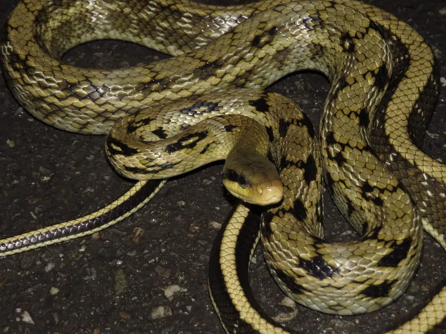

爬行动物 · 动物界
黑眉锦蛇 Elaphe taeniura

中国常见的大型无毒蛇，眼后有黑色条纹形似黑眉，善攀爬，常在屋顶和农田捕鼠，是有益的家蛇，民间视其为吉祥的象征。
- 分类
- 门脊索动物门纲爬行纲目有鳞目科游蛇科属锦蛇属
- 栖息环境
- 农田、村舍、屋顶、灌丛、山地林缘与岩壁
- 地理分布
- 中国大部分地区及东南亚部分地区
- 保护级别
- IUCN 无危（LC）；中国未列入国家重点保护名录
物种志
黑眉锦蛇体长 1.5–2 米，个别可达 2.5 米，身体细长而结实，头部较长，眼后各有一条明显的黑色纵纹，形似黑色的眉毛，“黑眉”之名由此而来；背面呈黄绿或橄榄褐色，身体前段有梯状或蝶状黑斑，后段有四条黑色纵纹延伸至尾部，腹部淡黄。
它分布于中国大部分地区以及东南亚部分地区，栖息于农田、村舍、屋顶、灌丛和山地林缘，善攀爬，能上房梁和树木，多在白天活动，捕食鼠类、鸟类、蛙类和蝙蝠。它是卵生蛇类，雌蛇产卵 5–20 枚，孵化期约 60–80 天。黑眉锦蛇无毒，是著名的“家蛇”，对控制鼠害十分有益，民间也视其为吉祥的象征，遇到时不必伤害它。
形态与习性
- 食性鼠类、鸟类、蛙类和蝙蝠
- 体长1.5–2 m，最长约 2.5 m
- 体重可达 2 kg 以上
- 寿命约 15–20 年
- 繁殖卵生，5–20 枚，孵化 60–80 天
- 毒性无毒，对人无害
趣味知识
- 黑眉锦蛇眼后的黑色条纹像画了眉毛，因此得名“黑眉”。
- 它善于攀爬，常出现在老房子的屋顶和房梁上捕鼠。
- 黑眉锦蛇是著名的“家蛇”，民间认为它能带来好运。
生态关系
- 捕食 → 泽蛙 蛇类捕食蛙类